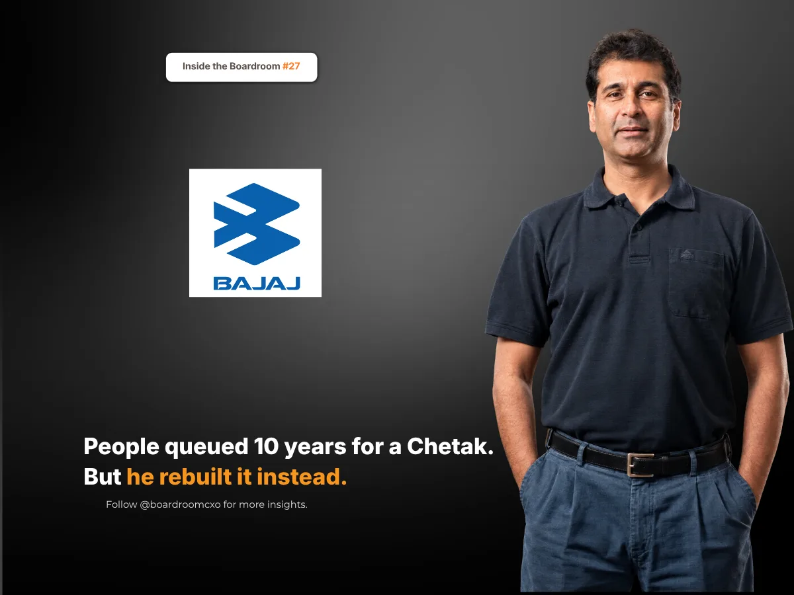

Key Takeaways
- In December 2009 Rajiv Bajaj said Bajaj Auto would stop making its last scooter, the Kristal, to focus on motorcycles. His father, chairman Rahul Bajaj, said he was hurt by the decision.
- In October 2019 the Chetak name returned as an electric scooter. Rajiv Bajaj refused to call it a return to scooters: "That would be a wrong inference."
- By 27 June 2026 the electric Chetak had sold 8,00,085 units, and its share of India's electric two-wheeler market rose from 8.3% in 2023 to 22.5% in January to June 2026. Boards should separate what a brand stands for from the product that once carried it.
On 9 December 2009, Rajiv Bajaj told reporters in New Delhi that Bajaj Auto would stop making its last scooter.
The Kristal was selling about 300 units a month. Production would end that financial year. India's most famous scooter maker would make no scooters at all.
What Was Being Given Up
It is easy to miss how much that meant. The Bajaj Chetak had been in production since 1972. In the licence raj years, when government controls capped how many scooters Bajaj could make, the waiting list was reported to run for years, by some accounts as long as ten. Families planned around a delivery date. "Hamara Bajaj" was not just an advertising line. It described the Indian middle class.
At its peak, Bajaj was the world's largest scooter maker. By 2009, buyers had moved to motorcycles, and the Chetak itself had already been out of production for several years.
Who Is Rajiv Bajaj?
Rajiv Bajaj is the managing director of Bajaj Auto. He took over as managing director in 2005, the same year Chetak production wound down, and set the company on a single course: to be a motorcycle specialist.
His reasoning on scooters was simple. If Bajaj was to be a motorcycle specialist, he said, it could not make scooters.
Focus Over Nostalgia
Not everyone agreed. His father, Rahul Bajaj, the chairman who had built the scooter business, said publicly that he was not convinced and that he was hurt by the decision.
Most leaders protect the heirloom. Rajiv Bajaj walked away from scooters altogether, against the wishes of the man who had made them famous.
The Chetak Comes Back, but Not as a Scooter Comeback
On 16 October 2019, Bajaj Auto unveiled an electric scooter. It carried the Chetak name.
This is where he refused the easy story. The headlines wrote themselves: Hamara Bajaj is back. He declined the lap of honour.
"Some people think we are changing strategy and are back in scooters. That would be a wrong inference," he told Autocar Professional.
The electric Chetak launched on 14 January 2020 at ₹1 lakh, sold at first through 18 dealerships, 13 in Bengaluru and five in Pune.
It was not the old scooter. It was a new product carrying an old promise.
What the Name Did Next
By 27 June 2026, the electric Chetak had sold 8,00,085 units, according to Vahan registration data. Its share of India's electric two-wheeler market rose from 8.3% in calendar 2023 to 22.5% in January to June 2026, making Bajaj one of the two largest electric two-wheeler makers in the country.
The Boardroom Lesson: A Brand Is Not the Product That Once Carried It
A legacy product is easy to defend. It has history, loyal customers and, often, a founder or chairman attached to it. Walking away from it looks like disloyalty.
A legacy is easy to defend. It is harder to let it go, and then rebuild the name.
Bajaj let go of the product and kept the promise. When the name came back, it came back on something new, built for a different market, and it was judged on what it sold, not on nostalgia.
Common Mistakes Boards Make With a Legacy Brand
Boards of companies with a famous old product tend to make the same three errors.
They keep the product alive for sentiment. A product selling a few hundred units a month takes management time and capital from the business that is actually growing.
They confuse the brand with the product. What customers remembered about the Chetak was trust and reliability, not two-stroke engines. That is what could be carried into a new product.
They bring the name back as a nostalgia play. A revival sold on memory alone fades fast. The electric Chetak was positioned as a new product, and its numbers had to stand on their own.
A Framework for Leaders Deciding What to Keep
When we brief boards on a CXO search for a company with a strong legacy brand, we push for three specific checks.
- Ask what the brand actually stands for. The right leader can separate the promise customers trust from the product that currently delivers it.
- Look for leaders who can say no to the founder's favourite. Focus sometimes means ending something the chairman built. Ask candidates when they last stopped a product people loved.
- Hire for the next product, not the last one. Bringing a name back on an electric scooter took engineering, product and marketing leaders who were building for a new market, not restoring an old one.
Why This Belongs in the Boardroom, Not Just the Business Pages
This sits alongside the story we told of Siddhartha Lal at Royal Enfield, another heir who made hard calls about a famous old two-wheeler brand and was proved right by the sales.
Some legacies are protected by keeping them unchanged. The stronger ones survive being rebuilt.
Sources
- domain-b, Bajaj announces end of the road for its scooters, December 2009
- Business Standard, Bajaj hurt by son's move to exit scooters, December 2009
- Autocar India, Bajaj Chetak: From inception to rebirth, October 2019
- Autocar Professional, Rajiv Bajaj: 'Some people think we are changing strategy and are back in scooters. That would be a wrong inference.', October 2019
- Autocar India, Bajaj Chetak e-scooter launched at Rs 1 lakh, January 2020
- Autocar India, Bajaj Chetak electric scooter sales cross 8 lakh milestone, June 2026
Related Reading
Everyone Said Royal Enfield Was Finished. Siddhartha Lal Asked for Two Years.
Read → R · 02 Founder Leadership · November 2026R C Bhargava: Maruti's Share Hit a 13-Year Low. It Still Sold a Record 24 Lakh Cars.
Read → R · 03 Founder Leadership · September 2026Anish Shah: The Outsider Who Fixed Mahindra's ₹5,200 Crore Problem
Read →Running a business with a famous old brand and deciding what to keep?
We screen for leaders who can let go of a legacy product without losing what the name stands for. Brief us on your next CXO mandate and we will tell you what the market actually has to offer.
Brief Us on a Mandate See all Marketing & CMO roles we fill →